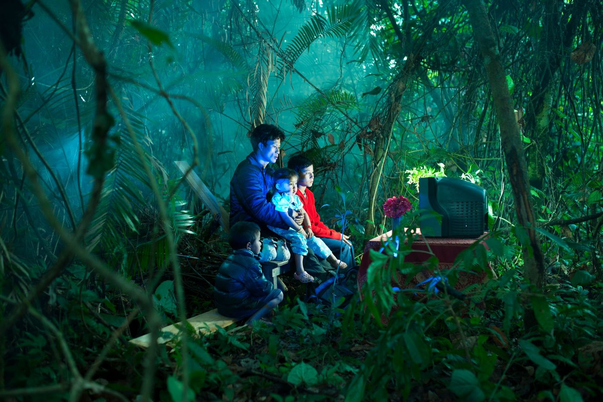
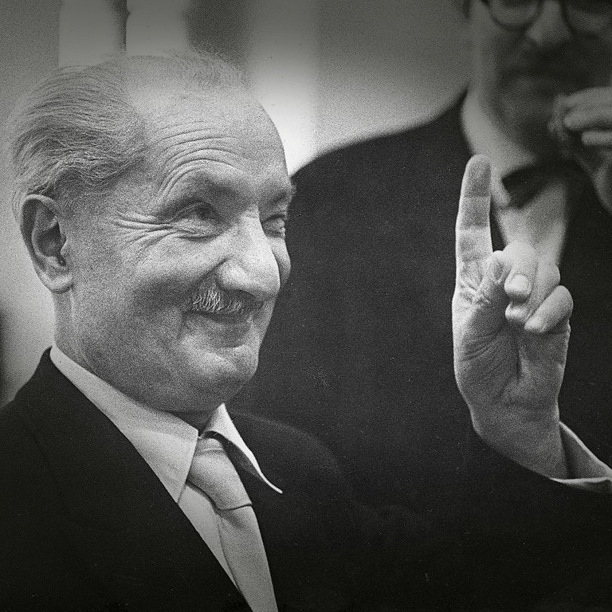
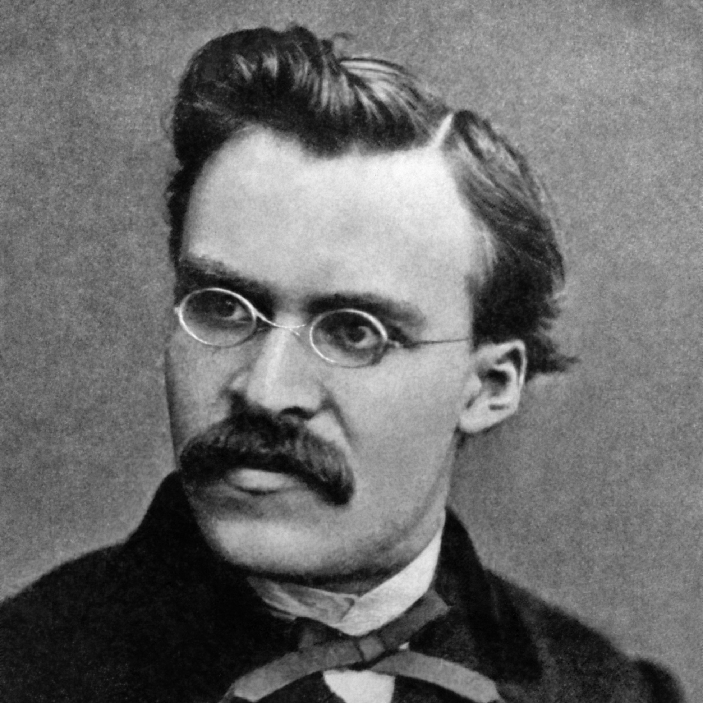
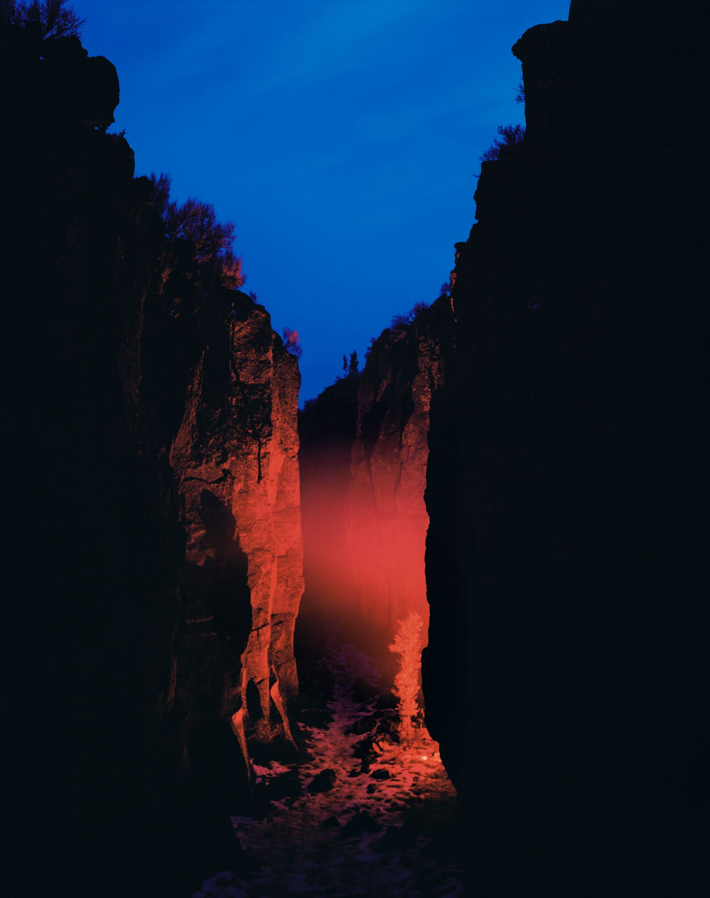
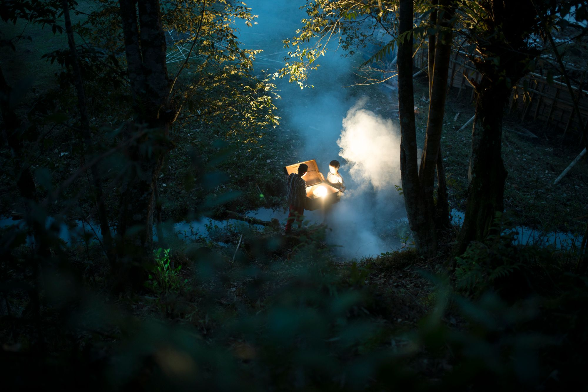
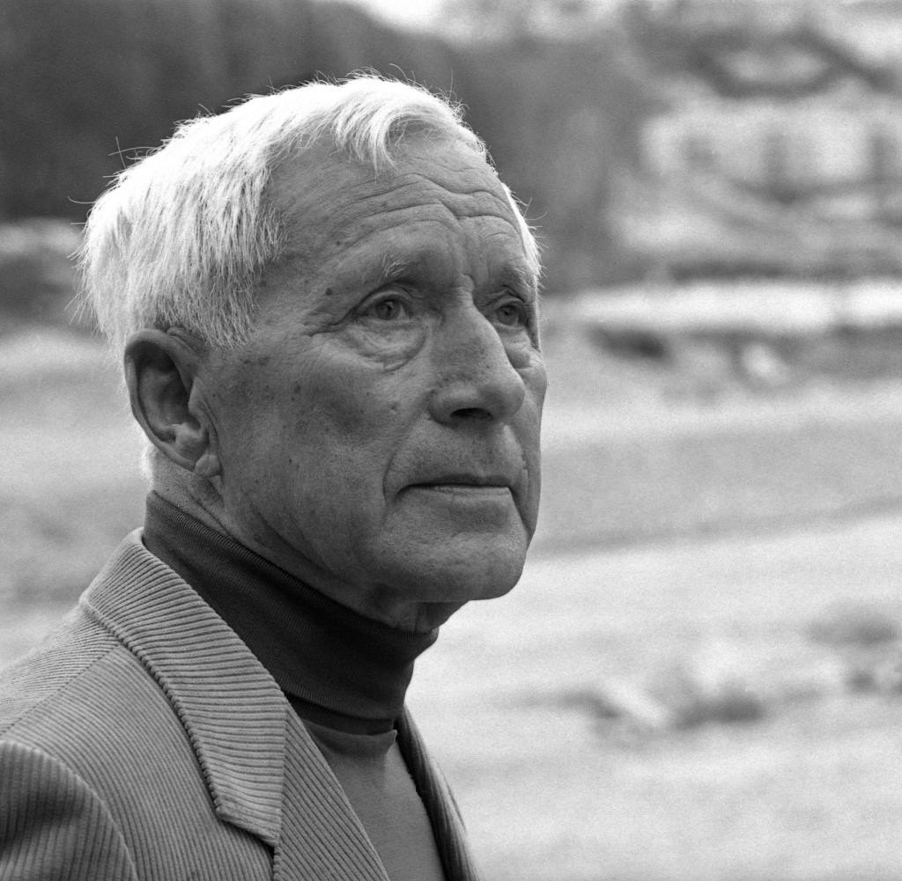

<!DOCTYPE html>
<html lang="en"></html>
<head>
  <title>The reference APP</title>
  <link href="style.css" rel="stylesheet">
  <link rel="preconnect" href="https://fonts.googleapis.com">
  <link rel="preconnect" href="https://fonts.gstatic.com" crossorigin>
  <link href="https://fonts.googleapis.com/css2?family=Josefin+Sans:wght@700&family=M+PLUS+Rounded+1c&family=Roboto:wght@500&display=swap" rel="stylesheet">
</head>

<body>
  <div class="container1">
    

    <h1 class="title-heidegger">Martin Heidegger</h1>

  </div>
    <a href="https://drive.google.com/drive/folders/1czTSXUJDJNCjs0yHE2xo14VyVRHnbgCf?usp=drive_link" target="_blank" rel="noopener noreferrer ">

  <div class="image-container">
    </a>

    <p class="text-1">En la pérdida de la <strong>sacralidad</strong> del mundo, se retira la <strong>magia</strong>. El secreto está en cómo convocamos a la naturaleza a través de la invocación de las <em>palabras</em>.</p>

  <div class="text-container2">
    <p class="text-2">La Naturaleza es convocada por nosotros. El modo en que develamos el mundo es <em>nombrándolo.</em></p>
  </div>

  <div class="text-container3">
    <p class="text-3">En lo Sagrado hay derroche y generosidad. Es el lugar que no tiene tiempo y no tiene para qué. El lugar donde no hay certezas y está por fuera de la lógica del dinero.</p>
  </div>
   <div class="photo-credit-heide">
    <a href="https://lensculture.com/de-sharbendu?modal=project-856893" target="_blank">Crédito: Sharbendu De</a>
   </div>
</div>

 <div class="container2">
  <div class="image-container2">
    <a href="https://drive.google.com/file/d/1BiEyiX81Trx5yFttrLP5qM7U9AiV6e0R/view?usp=drive_link" target="_blank"></a>
    <div>
      
    </div>
      <div class="div">
        <h1 class="title-nietzsche1">Friedrich</h1>
        <h1 class="title-nietzsche2">Nietzsche</h1>
    </div>
  </div>


<!-- <div class="container3">
  
  <h1 class="title-ernst">Ernst Junger</h1>
    <div class="text-container">
      <ul>
        <li><p>En la pérdida de la sacralidad del mundo, se retira la magia. El secreto está en cómo convocamos a la naturaleza a través de la invocación de las palabras.</p></li>
        <li><p>La Naturaleza es convocada por nosotros. El modo en que develamos el mundo, es como lo nombramos.</p></li>
        <li><p>En lo Sagrado hay derroche y generosidad. Es el lugar que no tiene tiempo y no tiene para qué. El lugar donde no hay certezas y está por fuera de la lógica del dinero.</p></li>
      </ul>
    </div>
    <div class="image-container">
      <a href="https://drive.google.com/file/d/13wteylqblDuCGBSyfB69T63kan3GlwHI/view?usp=drive_link" target="_blank"></a>
    </div>
 </div>


  <footer>
    <p></p>
  </footer> -->

</body>
</html>
